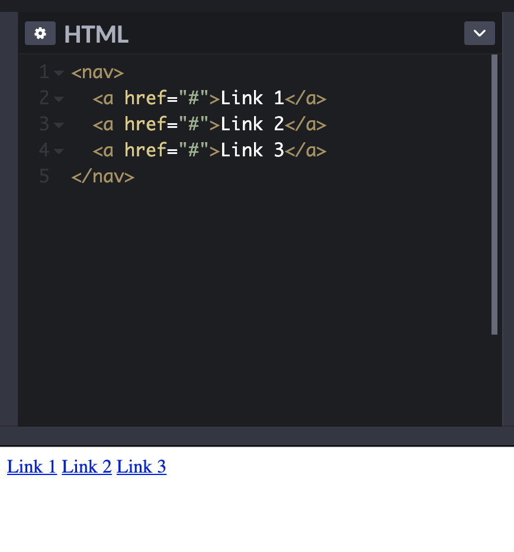

Sprint 2: Technical Blog
Creating a Nav Bar with HTML/CSS (using inline-block)
22 November 2020
So! You want to make a nav bar that doesn't look like a naff bar. Fair. Let's start with creating our HTML.
Unless you're a fan of times new roman in blue, let's do a little CSS-ery (pronounced "sorcery") to make it look snazzier, IMHO.
Ok, we kept the blue, but here's some pink to make it not so... Web 1.0. And some padding, so we can find our links! But what if I want each link to have more space between but not above or below? Do I just try width: 40px; and hope for the best?
Yeah, nah, that didn't do it.
Hmm... adding display: inline; didn't seem to do anything to the width, either. This is because "inline" simply takes the object at face value and parses it horizontally to others in the section. But what happens if I use display: inline-block;?
Well, that's definitely done SOMETHING. It looks suspiciously like I've made my links into 'blocks', which have a set width of 40px. And that's kind of the difference between the two. Inline simply places the object, but inline-block can manipulate the object, which is kinda helpful when you're a bit of a control freak and, idk, want to make a button a certain size.